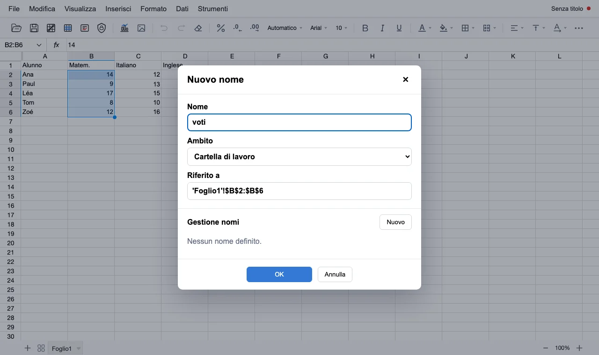

Intervalli denominati
Dare un nome
- Selezionare la cella o l’intervallo.
- Clic destro › Definisci nome… (o la freccia della casella del nome › Gestione nomi).
- Scrivere il nome, scegliere l’ambito, OK.

| Campo | Contenuto |
|---|---|
| Nome | comincia con una lettera o _; lettere, cifre, _ e ., senza spazio; non un indirizzo come B2 |
| Ambito | Cartella di lavoro: letto da tutti i fogli; un foglio: letto solo da lì, dove prevale su un nome della cartella |
| Riferito a | una cella o un intervallo, con il suo foglio: 'Foglio1'!$B$2:$B$6 |
Usare un nome
=MEDIA(voti)
=prezzo*(1+iva)- La freccia della casella del nome elenca i nomi: sceglierne uno seleziona il suo intervallo, nel suo foglio.
- Quando la selezione è esattamente un intervallo denominato, la casella del nome mostra il suo nome.
- Un elenco a discesa può leggere un intervallo di celle, indicato dal suo indirizzo.
Modificare, eliminare
Nella Gestione nomi, un clic su un nome riporta i suoi campi in modifica; Elimina lo elimina; Nuovo torna a un nome vuoto. Prima di eliminare un nome, sostituire le formule che lo leggono: conservano l’ultimo valore, poi non si calcolano più.
I nomi sono salvati nel file Excel e letti da esso.